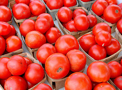
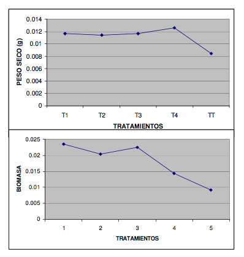

Evaluación del humus de lombriz como sustrato en la producción de plántulas de jitomate (Lycopersicon Esculentum) y chile (Capsicum Annuum L.)
Contreras R., S. H. , Ruiz C., J. A.; Romo C., R. L.; Aréchiga G., M. C.; Calderón R., F.; Rico R., M. G. Universidad de Guadalajara, Centro Universitario de Ciencias Biológicas y Agropecuarias (CUCBA). Departamento de Ciencias Ambientales.
Introducción
Los sistemas de producción sustentables se han establecido como alternativas para atender la creciente demanda de alimentos. Los sistemas de producción además de promover prácticas que preservan los recursos naturales y la biodiversidad, permiten hacer un uso eficiente y adecuado de los residuos agropecuarios. El uso de fertilizantes sintéticos para la producción de cultivos está siendo sustituido porque causa grandes problemas al medio ambiente como por ejemplo la degradación de suelos, la producción de alimentos tóxicos y la contaminación de mantos freáticos, entre otros. Por otra parte, las reglas para la aplicación y disposición de estiércol son cada vez más rigurosas. Una alternativa es la utilización de lombrices de tierra. Durante el proceso de alimentación, las lombrices consumen residuos orgánicos, aceleran la descomposición de la materia orgánica, modifican las propiedades físicas y químicas de los residuos consumidos, produciendo composta y de ésta manera la materia orgánica inestable es oxidada y estabilizada. Los residuos orgánicos procesados por la lombriz de tierra, humus de lombriz, tienen propiedades químicas y físicas deseables. En la actualidad el humus de lombriz juega un papel muy importante como una alternativa de la agricultura orgánica. El humus de lombriz ayuda en la formación de bacterias esenciales para facilitar la fijación de nitrógeno; además acelera el desarrollo de la raíz y los procesos de brotación, floración y maduración del cultivo. El uso de humus de lombriz es uno de los mejores abonos orgánicos y funciona como un corrector y mejorador de suelos. 
En México, la demanda anual de sustratos para producción de jitomate y chile y otros cultivos asciende a 5,000,000 m3 y para satisfacerla se utiliza principalmente turba (Peat moss), que es costosa. También se usa tierra de monte, cascarilla de arroz, corteza de pino, polvos y fibras de coco, entre otros.
Materiales y métodos
El experimento se realizó en un invernadero de 6 X 12 metros, ubicado en los LN 20◦ ̊30̒19" y LO 103 ̊33̒49" en el Municipio de Tlajomulco de Zúñiga. El humus de lombriz que se utilizó es de una granja de la asociación de lombricultores. El humus se coló con malla de 2 mm de luz. Se sembraron semillas de jitomate en un lote experimental de 4 charolas de germinación bajo un diseño experimental con bloques colocados al azar. También fueron sembradas semillas de chile en 4 charolas de germinación teniendo otro lote experimental. El experimento contó con cuatro tratamientos (T) y un testigo con cuatro repeticiones para cada uno. Los tratamientos se elaboraron con distintas mezclas de humus de lombriz y jal. 
Tratamientos
- T1= 100% humus de lombriz
- T2 = 75% humus de lombriz 25% de jal
- T3 = 50% humus de lombriz 50% de jal
- T4 = 25% humus de lombriz 75% de jal
El testigo (TT) consistió en 89%de turba 11% Perlita. Se aplicó riego todos los días. Para evaluar el efecto de los tratamientos se aplicó un ANDEVA de una sola vía con arreglo factorial y en diferencia de promedios. Se realizó una comparación de medias de tratamientos utilizando la prueba de Tukey.
Tabla 1. Acumulación de biomasa en el total de la planta de jitomate y chile en diferentes Sustratos.
Resultados
Los resultados obtenidos destacaron que el humus de lombriz favorece el desarrollo de cultivos en invernadero porque las necesidades nutritivas de especies como el tomate y chile fueron satisfechas con los diferentes porcentajes de vermiabono mezclado con jal. En los mejores tratamientos se observaron contenidos de humus mayores a 50%. El uso de humus de lombriz es una alternativa viable porque 1) los usuarios pueden ahorrar el 73 % de los costos, y 2)los beneficios que aporta a los propios cultivos al favorecer su desarrollo, además del mejoramiento del entorno ecológico fortaleciendo el enfoque de la producción orgánica al reciclar los residuos orgánicos.